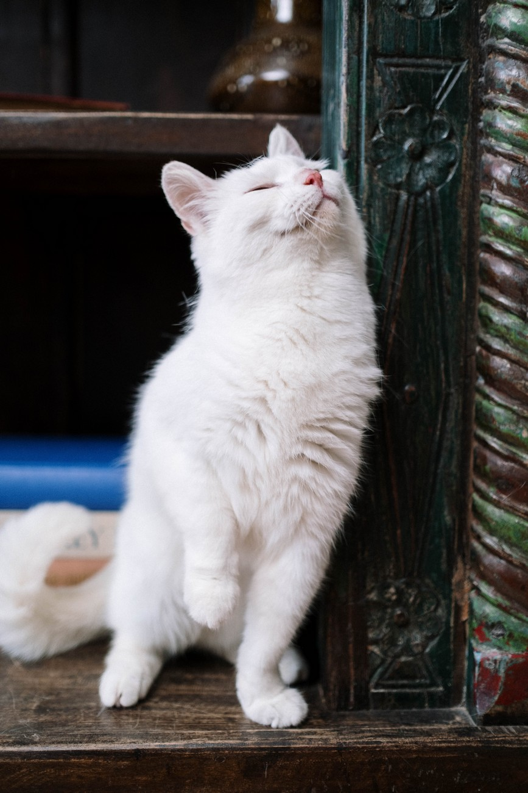

Recomendações
Antes da viagem, dê carinho e atenção, para que ele se sinta acolhido e em segurança;
Incentive o pet a fazer suas necessidades fisiológicas antes de sair de casa;
Mantenha as doses de vacina atualizadas;
A hidratação é muito importante: ofereça água em casa, permitindo que ele se hidrate o suficiente;
Prepare as caixas de transportes ou focinheiras se for necessária a utilização;
Não alimente o pet durante a viagem; isso causa enjoo e altera o sistema digestivo;
Informe-se sobre calmantes com o seu veterinário, se isso for necessário;
Fraldas veterinárias podem evitar transtornos na viagem.
